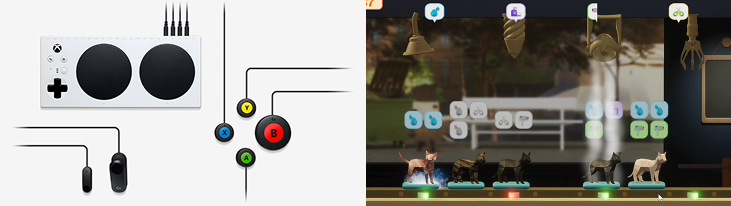
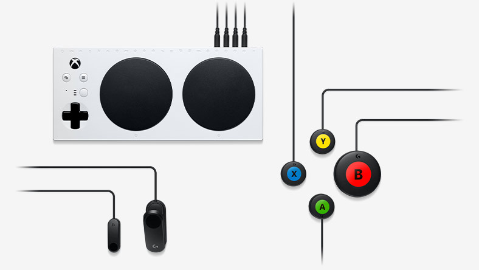
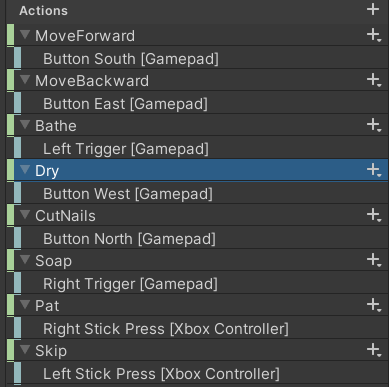
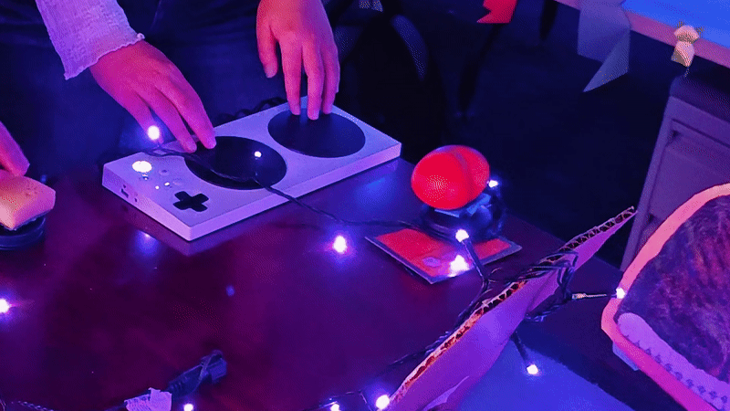

Design an interface that will allow users to perform certain "verbs" using the Microsoft Xbox adaptive
controllers
ROLEProgrammer
TIMELINE2 weeks

Game Mechanic
2-player collaborative, asymmetric game where you bathe a cat together using adaptive
controllers!.
The players are controlling a giant cat spa machine. One player moves the cats along the conveyor
belt, the other presses the right controls (wash, shampoo, dry, clip nails).
Pressed the wrong control? That's mean! The cat jumps off the conveyor belt, now angry, and the first
player has to pet it with the "pat-pat" button until it's happy enough to jump back on!
Platform
Unity Engine, Microsoft Xbox Adaptive Controllers.

Creating an interface to perform a task
We built on the prompt “bathing a cat”, using the Microsoft Xbox adaptive controllers to create a cat spa world
with good user affordance.
Our main challenge was to design an interface that will allow users to perform certain "verbs" using the
adaptive controllers. We picked the task of bathing a cat. This world also focused on creating a satisfying
interest curve for guests.
Cat Spa controls

Player 1: Conveyor Belt Left/Right
Player 1: Pat Pat! (petting the cat if it gets angry and jumps off the conveyor belt)

Player 2: Bathing the Cat (Shampoo, Wash, Blow Dry, Clip Nails)
Interim Playtest
1 week in, and we were in a good spot! Our main challenge now was creating consequences for the player's failure
- we noticed many players simply spam all buttons to wash the cats.
Final Game!
2 weeks in! We introduced the "pat-pat" button, and made the cats angrily jump off the conveyor if we did
something they did not want. The player controlling the conveyor belt had to pet the cat until it's happy enough
to jump back on.
We also improved our physical interface with tactile buttons that felt like each control.
Challenges
Learning a new platform in a week, creating user-intuitive physical interfaces.
Building Virtual Worlds is a course at Carnegie Mellon's Entertainment Technology Center that
focuses on rapid prototyping. Over a semester, we were put into 4 diverse teams of 2 artists, 2 programmers, and
a sound designer each and tasked us with creating a virtual world in 2 weeks (with a playable version ready in a
week). I was a programmer in these projects, and took on the additional producer and technical
artist roles in some of
them.